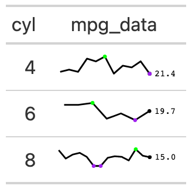
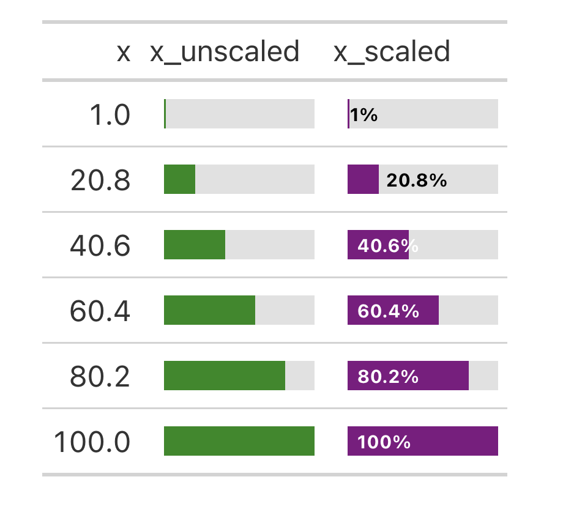

The goal of gtExtras is to provide some additional helper functions to assist in creating beautiful tables with gt.
The functions are generally wrappers around boilerplate or adding capabilities that are currently not yet built into gt. The {gt} package is amazing, make sure to go read the official documentation.
Installation
install.packages("gtExtras")Development version
To get a bug fix or to use a feature from the development version, you can install the development version of gtExtras from GitHub
# if needed install.packages("remotes")
remotes::install_github("jthomasmock/gtExtras")There are four families of functions in gtExtras:
- Themes: 7 themes that style almost every element of a
gttable, built off of data journalism-styled tables - Utilities: Helper functions for aligning/padding numbers, adding
fontawesomeicons, images, highlighting, dividers, styling by group, creating two tables or two column layouts, extracting ordered data from agttable internals, or generating a random dataset forreprex - Plotting: 12 plotting functions for inline sparklines, win-loss charts, distributions (density/histogram), percentiles, dot + bar, bar charts, confidence intervals, or summarizing an entire dataframe!
- Colors: 3 functions, a palette for “Hulk” style scale (purple/green), coloring rows with good defaults, or adding a “color box” along with the cell value
Also see the Plotting with gtExtras article for more examples of combining tables and graphics together.
A subset of functions are included below, or see the full function reference.
Themes
The package includes seven different themes, and 3 examples are the gt_theme_538() styled after FiveThirtyEight style tables, the gt_theme_espn() styled after ESPN style tables, and the gt_theme_nytimes() styled after The New York Times tables.
head(mtcars) %>%
gt() %>%
gt_theme_538()
head(mtcars) %>%
gt() %>%
gt_theme_espn()
head(mtcars) %>%
gt() %>%
gt_theme_nytimes() %>%
tab_header(title = "Table styled like the NY Times")
Hulk data_color
This is an opinionated diverging color palette. It diverges from low to high as purple to green. It is a good alternative to a red-green diverging palette as a color-blind friendly palette. The specific colors come from colorbrewer2.
Basic usage below, where a specific column is passed.
# basic use
head(mtcars) %>%
gt::gt() %>%
gt_hulk_col_numeric(mpg)
Trim provides a tighter range of purple/green so the colors are less pronounced.
head(mtcars) %>%
gt::gt() %>%
# trim gives smaller range of colors
# so the green and purples are not as dark
gt_hulk_col_numeric(mpg:disp, trim = TRUE) 
Reverse makes higher values represented by purple and lower by green. The default is to have high = green, low = purple.
# option to reverse the color palette
# so that purple is higher
head(mtcars) %>%
gt::gt() %>%
# reverse = green for low, purple for high
gt_hulk_col_numeric(mpg:disp, reverse = FALSE) 
gt_color_rows()
The gt_color_rows() function is a thin boilerplate wrapper around gt::data_color(). It’s simpler to use but still provides rich color choices thanks to the inclusion of paletteer::paletteer_d(). This can provide 100s of discrete (ie categorical) or continuous color palettes.
# basic use
mtcars %>%
head() %>%
gt() %>%
gt_color_rows(mpg:disp)
You can change the specific palette with palette = "package_name::palette_name"
# recognizes all of the dynamic palettes from paletteer
mtcars %>%
head() %>%
gt() %>%
gt_color_rows(mpg:disp, palette = "ggsci::blue_material")
You can also use custom-defined palettes with named colors in R or hex color values.
mtcars %>%
head() %>%
gt() %>%
gt_color_rows(mpg:disp, palette = c("white", "green"))
# could also use palette = c("#ffffff", "##00FF00")
Lastly, you can also provide categorical or discrete data to be colored.
# provide type = "discrete"
mtcars %>%
head() %>%
gt() %>%
gt_color_rows(
cyl,
palette = "ggthemes::colorblind",
# note that you can manually define range like c(4, 6, 8)
domain = range(mtcars$cyl),
pal_type = "discrete"
)
gt_highlight_rows()
This provides the ability to highlight and optionally bold entire rows within an existing gt table. Basic use defaults to a light-blue highlight which can be changed with the fill argument.
head(mtcars[,1:5]) %>%
tibble::rownames_to_column("car") %>%
gt() %>%
gt_highlight_rows(rows = 2, font_weight = "normal") 
You can optionally specify a target column with target_col that will be bold, while the rest of the row’s text will be default weight.
head(mtcars[,1:5]) %>%
tibble::rownames_to_column("car") %>%
gt() %>%
gt_highlight_rows(
rows = 5,
fill = "lightgrey",
bold_target_only = TRUE,
target_col = car
)
gt_sparkline()
mtcars %>%
dplyr::group_by(cyl) %>%
# must end up with list of data for each row in the input dataframe
dplyr::summarize(mpg_data = list(mpg), .groups = "drop") %>%
gt() %>%
gt_plt_sparkline(mpg_data)
gt_bar_plot()
The gt_bar_plot function takes an existing gt_tbl object and adds horizontal barplots via native HTML. This is a wrapper around raw HTML strings, gt::text_transform() and gt::cols_align(). Note that values default to being normalized to the percent of the maximum observed value in the specified column. You can turn this off if the values already represent a percentage value representing 0-100.
mtcars %>%
head() %>%
dplyr::select(cyl, mpg) %>%
dplyr::mutate(mpg_pct_max = round(mpg/max(mpg) * 100, digits = 2),
mpg_scaled = mpg/max(mpg) * 100) %>%
dplyr::mutate(mpg_unscaled = mpg) %>%
gt() %>%
gt_plt_bar_pct(column = mpg_scaled, scaled = TRUE) %>%
gt_plt_bar_pct(column = mpg_unscaled, scaled = FALSE, fill = "blue", background = "lightblue") %>%
cols_align("center", contains("scale")) %>%
cols_width(4 ~ px(125),
5 ~ px(125))
gt_merge_stack()
The gt_merge_stack() function takes an existing gt table and merges column 1 and column 2, stacking column 1’s text on top of column 2’s. Top text is in all caps with black bold text, while the lower text is smaller and dark grey.
team_df <- readRDS(url("https://github.com/nflverse/nflfastR-data/raw/master/teams_colors_logos.rds"))
team_df %>%
dplyr::select(team_nick, team_abbr, team_conf, team_division, team_wordmark) %>%
head(8) %>%
gt(groupname_col = "team_conf") %>%
gt_merge_stack(col1 = team_nick, col2 = team_division) %>%
gt_img_rows(team_wordmark)
gt_plt_winloss()
This function takes a list-column of win loss values (ie, 0=loss, 0.5 = tie, 1 = win) and ouputs an inline plot representing the win/loss squares with blue = win, red = loss, grey = tie. Points are also also redundantly coded with height, where wins are highest, ties are middle, and losses are at the bottom.
The example below generates an example dataset and then embeds a plot.
create_input_df <- function(repeats = 3){
input_df <- dplyr::tibble(
team = c("A1", "B2", "C3", "C4"),
Wins = c(3, 2, 1, 1),
Losses = c(2, 3, 2, 4),
Ties = c(0, 0, 2, 0),
outcomes = list(
c(1, .5, 0) %>% rep(each = repeats),
c(0, 1, 0.5) %>% rep(each = repeats),
c(0, 0.5, 1) %>% rep(each = repeats),
c(0.5, 1, 0) %>% rep(each = repeats)
)
)
input_df
}
create_input_df(5) %>%
dplyr::glimpse()#> create_input_df(5) %>%
#> dplyr::glimpse()
#>
#> Rows: 4
#> Columns: 5
#> $ team <chr> "A1", "B2", "C3", "C4"
#> $ Wins <dbl> 3, 2, 1, 1
#> $ Losses <dbl> 2, 3, 2, 4
#> $ Ties <dbl> 0, 0, 2, 0
#> $ outcomes <list> <1.0, 1.0, 1.0, 1.0, 1.0, 0.5,...Now that we have way to quickly generate example data, we can show the ability to incrementally add the win/losses.
Starting with 3 games. Please ignore the Wins/Loss/Ties columns, as they are simply placeholders. I am iterating the length of the outcomes list row.
create_input_df(1) %>%
gt() %>%
gt_plt_winloss(outcomes, max_wins = 15) %>%
tab_options(data_row.padding = px(2))
And moving to 12 games, we can see that the scale is unchanged, and “empty” points are replaced with outcomes once the values are present in the data.
create_input_df(4) %>%
gt() %>%
gt_plt_winloss(outcomes, max_wins = 15) %>%
tab_options(data_row.padding = px(2))
You can also switch over to ‘squares’ instead of ‘pills’ by changing the type argument.
create_input_df(4) %>%
gt() %>%
gt_plt_winloss(outcomes, max_wins = 15, type = "square") %>%
tab_options(data_row.padding = px(2))
A more realistic use case is seen below with data from nflreadr:
library(dplyr)
library(tidyr)
library(nflreadr)
games_df <- nflreadr::load_schedules() %>%
filter(season == 2020, game_type == "REG") %>%
select(game_id, team_home = home_team, team_away = away_team, result, week) %>%
pivot_longer(contains('team'), names_to = 'home_away', values_to = 'team', names_prefix = 'team_') %>%
mutate(
result = ifelse(home_away == 'home', result, -result),
win = ifelse(result == 0 , 0.5, ifelse(result > 0, 1, 0))
) %>%
select(week, team, win) %>%
mutate(
team = case_when(
team == 'STL' ~ 'LA',
team == 'OAK' ~ 'LV',
team == 'SD' ~ 'LAC',
T ~ team
)
)
team_df <- nflreadr::load_teams() %>%
select(team_wordmark, team_abbr, team_conf, team_division)
joined_df <- games_df %>%
group_by(team) %>%
summarise(
Wins = length(win[win==1]),
Losses = length(win[win==0]),
outcomes = list(win), .groups = "drop") %>%
left_join(team_df, by = c("team" = "team_abbr")) %>%
select(team_wordmark, team_conf, team_division, Wins:outcomes)
final_df <- joined_df %>%
filter(team_conf == "AFC") %>%
group_by(team_division) %>%
arrange(desc(Wins)) %>%
ungroup() %>%
arrange(team_division)
final_df %>%
gt(groupname_col = "team_division") %>%
gt_plt_winloss(outcomes, max_wins = 16) %>%
gt_img_rows(columns = team_wordmark) %>%
gt_theme_538() %>%
tab_header(title = "2020 Results by Division for the AFC")
fmt_symbol_first
This function allows you to format your columns only on the first row, where remaining rows in that column have whitespace added to the end to maintain proper alignment.
library(gtExtras)
library(gt)
gtcars %>%
head() %>%
dplyr::select(mfr, year, bdy_style, mpg_h, hp) %>%
dplyr::mutate(mpg_h = rnorm(n = dplyr::n(), mean = 22, sd = 1)) %>%
gt::gt() %>%
gt::opt_table_lines() %>%
fmt_symbol_first(column = mfr, symbol = "$", last_row_n = 6) %>%
fmt_symbol_first(column = year, suffix = "%") %>%
fmt_symbol_first(column = mpg_h, symbol = "%", decimals = 1) %>%
fmt_symbol_first(hp, symbol = "°", suffix = "F", symbol_first = TRUE)
pad_fn
You can use pad_fn() with gt::fmt() to pad specific columns that contain numeric values. You will use it when you want to “decimal align” the values in the column, but not require printing extra trailing zeroes.
data.frame(x = c(1.2345, 12.345, 123.45, 1234.5, 12345)) %>%
gt() %>%
fmt(fns = function(x){pad_fn(x, nsmall = 4)}) %>%
tab_style(
# MUST USE A MONO-SPACED FONT
style = cell_text(font = google_font("Fira Mono")),
locations = cells_body(columns = x)
)